options(cache=T)
dataList=list(x = c( 1.0, 1.5, 1.5, 1.5, 2.5, 4.0, 5.0, 5.0, 7.0,
8.0, 8.5, 9.0, 9.5, 9.5, 10.0, 12.0, 12.0, 13.0,
13.0, 14.5, 15.5, 15.5, 16.5, 17.0, 22.5, 29.0, 31.5),
Y = c(1.80, 1.85, 1.87, 1.77, 2.02, 2.27, 2.15, 2.26, 2.47,
2.19, 2.26, 2.40, 2.39, 2.41, 2.50, 2.32, 2.32, 2.43,
2.47, 2.56, 2.65, 2.47, 2.64, 2.56, 2.70, 2.72, 2.57), N = 27)
dt<-data.frame(x=dataList$x,y=dataList$Y)
library(dplyr)
dt%>%head()
## x y
## 1 1.0 1.80
## 2 1.5 1.85
## 3 1.5 1.87
## 4 1.5 1.77
## 5 2.5 2.02
## 6 4.0 2.27Dugong Growth Curve: Bayesian and Frequentist Models
Introduction
In this tutorial, we study the growth curve of dugongs animals using statistical modeling techniques. We begin by estimating a frequentist simple linear model, where the response variable is the length of the animals and the predictor is the log-transformed age. We find that this model is highly significant and provides a good fit to the data. To assess the prediction performance of the model, we use a leave-one-out method.
Next, we estimate the same model using a Bayesian approach and consider flat priors on the parameters. We also use leave-one-out cross-validation to evaluate its prediction performance. We find that the Bayesian approach provides similar results to the frequentist approach but with the added benefit of being able to incorporate prior knowledge and uncertainty into the analysis.
Finally, we use a non-linear model to estimate the growth curve of dugongs animals using a Bayesian approach. This model allows for more flexibility in modeling the growth trajectory over time. We show that the Bayesian approach provides a good fit to the data and allows us to make predictions about the growth of dugongs animals in the future.
Overall, this tutorial provides a practical introduction to statistical modeling techniques for studying the growth curve of animals. We demonstrate the use of frequentist and Bayesian approaches, as well as the importance of model selection and evaluation techniques.
Data and Model
Carlin and Gelfand (1991) present a nonconjugate Bayesian analysis of the following data set from Ratkowsky (1983):
| Dugongs (i) | 1 | 2 | 3 | 4 | … | 27 |
| Age (xi) | 1.0 | 1.5 | 1.5 | 1.5 | … | 31.5 |
| Length (yi) | 1.80 | 1.85 | 1.87 | 1.77 | … | 2.57 |
The data are length (in meters) and age (in years) measurements of 27 captured dugongs (sea cows) of the sirenian species. Carlin and Gelfand (1991) model this data using a nonlinear growth curve with no inflection point and an asymptote as xi tends to infinity. The model is given by:
Yi = α − β ⋅ γxi + ϵi, i = 1, …, n
where ϵ ∼ N(0,σ2). In this model, α corresponds to the average length of a fully grown dugong (x→∞), α − β is the length of a dugong at birth (x=0) and γ determines the growth rate: lower values produce an initially steep growth curve. In comparison, higher values lead to gradual, almost linear growth. Here’s the data displayed in the above table:
The objective of this notebook is to present a statistical model for estimating the growth curve of Dugongs. We begin by estimating a simple linear model where the weight of Dugongs is calculated using the log transformation of the Age variable. We will first estimate a frequentist linear model and evaluate its performance using cross-validation. Various metrics, such as root mean square error, will be computed. Next, we will estimate the same model using a Bayesian approach and assess its performance using cross-validation.
A first Simple linear model
Let’s begin by creating the logarithmic transformation of the age variable and plotting the scatter plot of log-age versus weights.
dt<-dt%>%mutate(lx=log(x))
library(ggpubr)
ggscatter(data=dt,x = 'lx',y='y',add = 'reg.line',xlab = 'log-age',ylab = 'weight')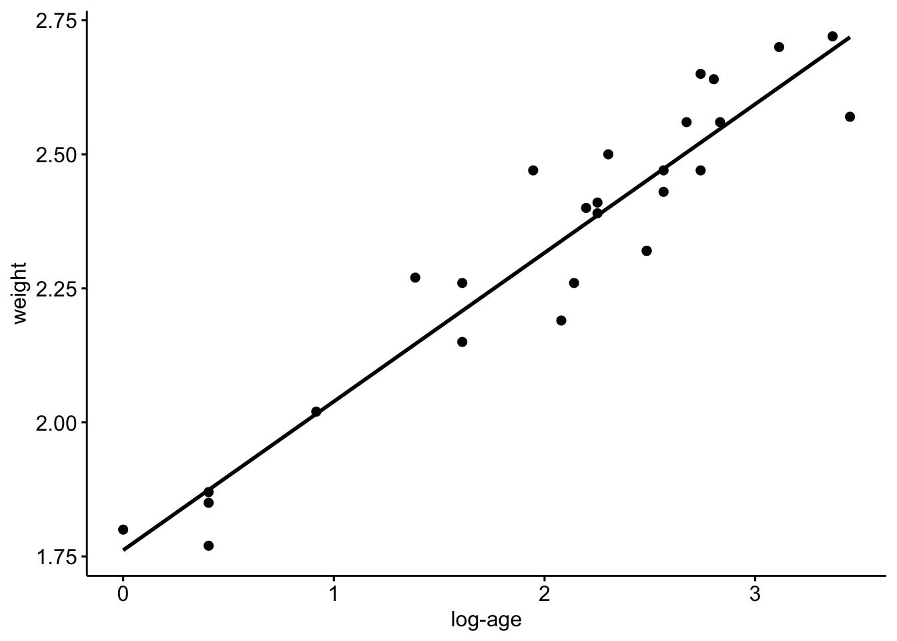
We can observe a strong linear relationship between the log-age and weight variables. Let’s proceed by estimating the simple linear model using the Ordinary Least Squares (OLS) method. The estimated model is the following:
Yi = β0 + β1 ⋅ log (xi) + ϵi, i = 1, …, n
Here’s the R code of the model estimation
m1<-lm(y~lx,data=dt)
summary(m1)
##
## Call:
## lm(formula = y ~ lx, data = dt)
##
## Residuals:
## Min 1Q Median 3Q Max
## -0.148441 -0.054890 0.004223 0.054358 0.168681
##
## Coefficients:
## Estimate Std. Error t value Pr(>|t|)
## (Intercept) 1.76166 0.04250 41.45 < 2e-16 ***
## lx 0.27733 0.01881 14.75 7.71e-14 ***
## ---
## Signif. codes: 0 '***' 0.001 '**' 0.01 '*' 0.05 '.' 0.1 ' ' 1
##
## Residual standard error: 0.08994 on 25 degrees of freedom
## Multiple R-squared: 0.8969, Adjusted R-squared: 0.8928
## F-statistic: 217.5 on 1 and 25 DF, p-value: 7.707e-14The summary output of the model provides information on the coefficients, standard errors, t-values, p-values, and other statistics. We can learn the following
The intercept coefficient is estimated to be 1.76166, which represents the expected value of
ywhenlxis 0. The slope coefficient forlxis estimated to be 0.27733, indicating that the expected change inyfor a one-unit increase inlxis 0.27733 units.The p-value associated with the slope coefficient is less than 0.001, indicating strong evidence against the null hypothesis that the true slope is 0. This suggests that
lxis a significant predictor ofy.The multiple R-squared value of 0.8969 indicates that the linear model explains a large proportion of the variability in the data. The adjusted R-squared value of 0.8928 takes into account the number of predictor variables and adjusts the R-squared value accordingly.
The residual standard error of 0.08994 indicates the average distance between the observed values of
yand the predicted values based on the model. The F-statistic of 217.5 and associated p-value of 7.707e-14 suggest that the model as a whole is statistically significant.
To evaluate the predictive performance of the model estimated above, we will use the Leave-One-Out (LOO) method instead of cross-validation. The LOO method involves fitting the model to all the data except for one observation, and then using the fitted model to predict the left-out observation. This process is repeated for each observation, and the predictions are compared to the observed values to estimate the model’s performance. The LOO method is a commonly used approach for estimating the out-of-sample predictive accuracy of a model.
In R, the caret package provides a convenient way to perform LOO cross-validation for different types of models, including linear regression models. The package includes a function called trainControl, which allows you to specify the type of cross-validation you want to use, such as LOOCV, and the evaluation metric you want to use to assess the model’s performance. By using the caret package and the LOO method, we can estimate the model’s prediction power and assess its ability to generalize to new data.
library(caret)
z=train(y ~ lx, method = "lm", data = dt, trControl = trainControl(method = "LOOCV"))
z
## Linear Regression
##
## 27 samples
## 1 predictor
##
## No pre-processing
## Resampling: Leave-One-Out Cross-Validation
## Summary of sample sizes: 26, 26, 26, 26, 26, 26, ...
## Resampling results:
##
## RMSE Rsquared MAE
## 0.09257742 0.8820812 0.07485886
##
## Tuning parameter 'intercept' was held constant at a value of TRUE
z$pred
## pred obs rowIndex intercept
## 1 1.750642 1.80 1 TRUE
## 2 1.878612 1.85 2 TRUE
## 3 1.874878 1.87 3 TRUE
## 4 1.893546 1.77 4 TRUE
## 5 2.015335 2.02 5 TRUE
## 6 2.138617 2.27 6 TRUE
## 7 2.210807 2.15 7 TRUE
## 8 2.205494 2.26 8 TRUE
## 9 2.294720 2.47 9 TRUE
## 10 2.344058 2.19 10 TRUE
## 11 2.358849 2.26 11 TRUE
## 12 2.369876 2.40 12 TRUE
## 13 2.385849 2.39 13 TRUE
## 14 2.385047 2.41 14 TRUE
## 15 2.396129 2.50 15 TRUE
## 16 2.456929 2.32 16 TRUE
## 17 2.456929 2.32 17 TRUE
## 18 2.475163 2.43 18 TRUE
## 19 2.473146 2.47 19 TRUE
## 20 2.500085 2.56 20 TRUE
## 21 2.514014 2.65 21 TRUE
## 22 2.524908 2.47 22 TRUE
## 23 2.532566 2.64 23 TRUE
## 24 2.546546 2.56 24 TRUE
## 25 2.618155 2.70 25 TRUE
## 26 2.692441 2.72 26 TRUE
## 27 2.738879 2.57 27 TRUE
sqrt(mean((z$pred$pred-z$pred$obs)^2))
## [1] 0.09257742
mean(abs(z$pred$pred-z$pred$obs))
## [1] 0.07485886
RMSE(z$pred$pred,z$pred$obs)
## [1] 0.09257742
z$results
## intercept RMSE Rsquared MAE
## 1 TRUE 0.09257742 0.8820812 0.07485886We have then computed the following metrics:
RMSE: (Root Mean Square Error)\[ \mbox{RMSE}=\sqrt{\displaystyle\frac{1}{n}\sum\_{i=1}^n(y_i-\widehat{y}\_i)^2} \]
MAE: (Mean Absolute Error)\[ \mbox{MAE}=\displaystyle\frac{1}{n}\sum\_{i=1}^n\left\|y_i-\widehat{y}\_i\right\| \]
Rsquared: is the mean of the R2 of all the estimated linear models
We can also use Metrics package to calculate the following metrics:
biascomputes the average amount by which actual is greater than predicted. If a model is unbiased should be close to zero.
library(Metrics)
bias(z$pred$obs,z$pred$pred)
## [1] -0.0004526326raeprovides the absolute error of the predictions relative to a naive model that predicted the mean for every data point.
rae(z$pred$obs,z$pred$pred)
## [1] 0.3450437Simple linear Bayesian Model
We will now estimate the linear model Yi = β0 + β1 ⋅ log (xi) + ϵi, i = 1, …, n
using a Bayesian approach. For the priors on the parameters, we will consider flat (non-informative) distributions. Specifically, we will assume a flat normal distribution for both the intercept β0 and the coefficient β1, and a flat gamma distribution for the precision parameter τ.
The JAGS model:
dug_log_lin = "
model {
#Likelihood
for (i in 1:N) {
Y[i]~dnorm(mu[i],tau)
mu[i] <- beta0+beta1*lx[i]
}
#Priors
beta0 ~ dnorm(0,1E-06)
beta1 ~ dnorm(0,1E-06)
tau ~ dgamma(1E-03,1E-03)
sigma2 <- 1/tau
}
"The data:
dataList2=list(lx = dt$lx,
Y = c(1.80, 1.85, 1.87, 1.77, 2.02, 2.27, 2.15, 2.26, 2.47,
2.19, 2.26, 2.40, 2.39, 2.41, 2.50, 2.32, 2.32, 2.43,
2.47, 2.56, 2.65, 2.47, 2.64, 2.56, 2.70, 2.72, 2.57),
N = 27) Next, we will define the parameters for the Markov Chain Monte Carlo (MCMC) algorithm. We will run three Markov Chains in parallel, each with a thin step equal to 5. The burn-in period will consist of the first 3000 iterations, and we will save the last 10000 iterations for each chain to estimate the posterior distribution of the model parameters.
nChains=3
burnInSteps=3000
thinSteps= 5
numSavedSteps= 10000The following nIter variable computes the total number of iteration for each Markov Chain
nIter = ceiling(burnInSteps + (numSavedSteps * thinSteps)/nChains)
nIter
## [1] 19667Here’s how to initiate randomly the Markov Chains
inits<-vector('list',nChains)
for(j in 1:nChains){
inits[[j]]=list(beta0 = rnorm(1,m1$coefficients[1],1),
beta1 = rnorm(1,m1$coefficients[2],1),
tau=runif(1,0,100))
}
inits
## [[1]]
## [[1]]$beta0
## [1] -0.7792636
##
## [[1]]$beta1
## [1] -0.5578119
##
## [[1]]$tau
## [1] 61.83508
##
##
## [[2]]
## [[2]]$beta0
## [1] 2.13604
##
## [[2]]$beta1
## [1] -0.288488
##
## [[2]]$tau
## [1] 90.53964
##
##
## [[3]]
## [[3]]$beta0
## [1] 1.651952
##
## [[3]]$beta1
## [1] 1.82435
##
## [[3]]$tau
## [1] 9.182417The parameters of interest:
parameters.to.save<-c("beta0","beta1","tau")Running the Bayesian model and obtaining a sample from the posterior distribution:
library(R2jags)
library(runjags)
ll_dug_bm <- jags(data = dataList2, inits = inits,
parameters.to.save = parameters.to.save,
n.chains = nChains, n.iter = nIter,
n.burnin = burnInSteps,n.thin = thinSteps,
model.file =textConnection(dug_log_lin))
## Compiling model graph
## Resolving undeclared variables
## Allocating nodes
## Graph information:
## Observed stochastic nodes: 27
## Unobserved stochastic nodes: 3
## Total graph size: 103
##
## Initializing model
print(ll_dug_bm)
## Inference for Bugs model at "4", fit using jags,
## 3 chains, each with 19667 iterations (first 3000 discarded), n.thin = 5
## n.sims = 9999 iterations saved
## mu.vect sd.vect 2.5% 25% 50% 75% 97.5% Rhat n.eff
## beta0 1.762 0.045 1.673 1.732 1.762 1.791 1.852 1.001 9100
## beta1 0.277 0.020 0.237 0.265 0.278 0.290 0.316 1.001 10000
## tau 123.066 34.857 64.590 98.089 119.376 144.608 199.984 1.001 3400
## deviance -52.318 2.606 -55.285 -54.215 -52.987 -51.150 -45.438 1.001 10000
##
## For each parameter, n.eff is a crude measure of effective sample size,
## and Rhat is the potential scale reduction factor (at convergence, Rhat=1).
##
## DIC info (using the rule, pD = var(deviance)/2)
## pD = 3.4 and DIC = -48.9
## DIC is an estimate of expected predictive error (lower deviance is better).Let’s proceed to the convergence diagnostics of the MCMC algorithm. We have first to transform the JAGS output to an mcmc object:
library(coda)
library(mcmcplots)
library(ggmcmc)
ll_dug_bm.mcmc=as.mcmc(ll_dug_bm)
ll_dug_bm.gg<-ggs(ll_dug_bm.mcmc)
ll_dug_bm.gg%>%head()
## # A tibble: 6 × 4
## Iteration Chain Parameter value
## <int> <int> <fct> <dbl>
## 1 1 1 beta0 1.91
## 2 2 1 beta0 1.84
## 3 3 1 beta0 1.84
## 4 4 1 beta0 1.74
## 5 5 1 beta0 1.76
## 6 6 1 beta0 1.75We compute first the Potential Scale Reduction Factor (Rhat), proposed by Gelman and Rubin (1992) using ggs_Rhat.
The Potential Scale Reduction Factor (Rhat) is a commonly used convergence diagnostic in MCMC algorithms. It measures the ratio of the between-chain variance to the within-chain variance of the posterior distribution.
The Rhat value provides an estimate of how much the variance of the posterior distribution could be reduced if the Markov chains were run for an infinite number of iterations.
In other words, an Rhat value close to 1 suggests that the chains have converged to the same stationary distribution, while a value greater than 1 indicates that further iterations are needed to achieve convergence.
The recommended threshold for Rhat is typically 1.1 or lower, although some researchers prefer a stricter threshold of 1.05 or lower. The Rhat value can be computed for each model parameter, and values greater than the threshold suggest that the corresponding parameter has not converged and may require further investigation or modification of the model.
rhat1<-ggs_Rhat(ll_dug_bm.gg,family='beta')
rhat1$data
## # A tibble: 2 × 5
## Parameter B W wa Rhat
## <fct> <dbl> <dbl> <dbl> <dbl>
## 1 beta0 0.00216 0.00200 0.00200 1.00
## 2 beta1 0.000331 0.000392 0.000392 1.00
rhat1<-ggs_Rhat(ll_dug_bm.gg,family='tau')
rhat1$data
## # A tibble: 1 × 5
## Parameter B W wa Rhat
## <fct> <dbl> <dbl> <dbl> <dbl>
## 1 tau 3986. 1214. 1215. 1.00We can also use the following
gelman.diag(ll_dug_bm.mcmc)
## Potential scale reduction factors:
##
## Point est. Upper C.I.
## beta0 1 1
## beta1 1 1
## deviance 1 1
## tau 1 1
##
## Multivariate psrf
##
## 1
gelman.plot(ll_dug_bm.mcmc)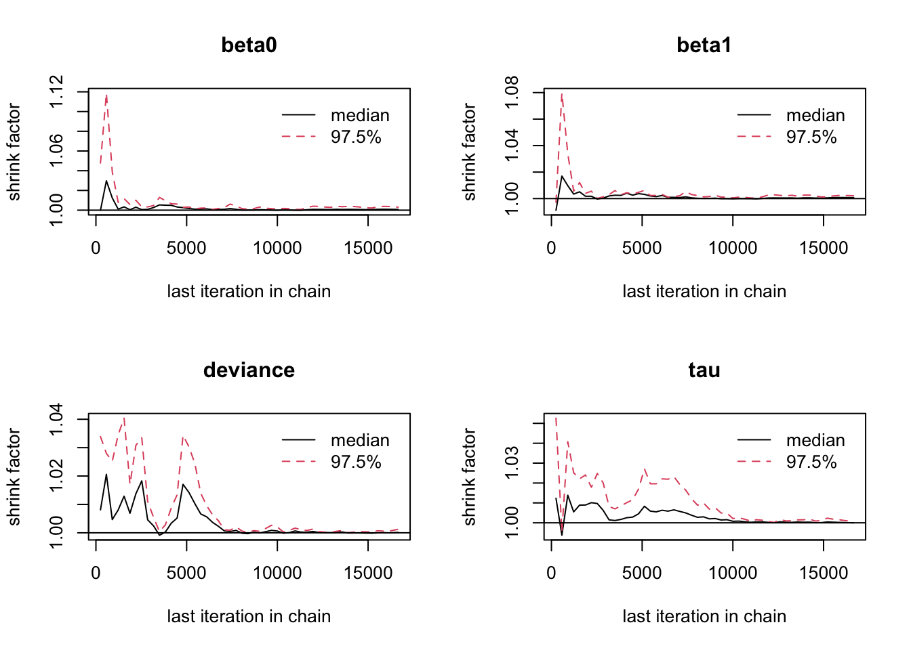
- Density plots
ggs_density(ll_dug_bm.gg,family='beta',hpd = T)+theme_bw()+theme(legend.position = 'top')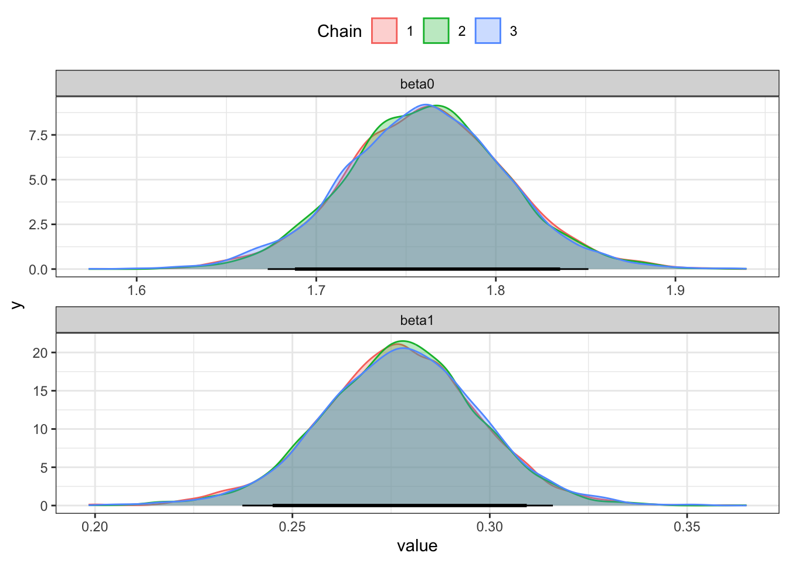
ggs_density(ll_dug_bm.gg,family='tau',hpd = T)+theme_bw()+theme(legend.position = 'top')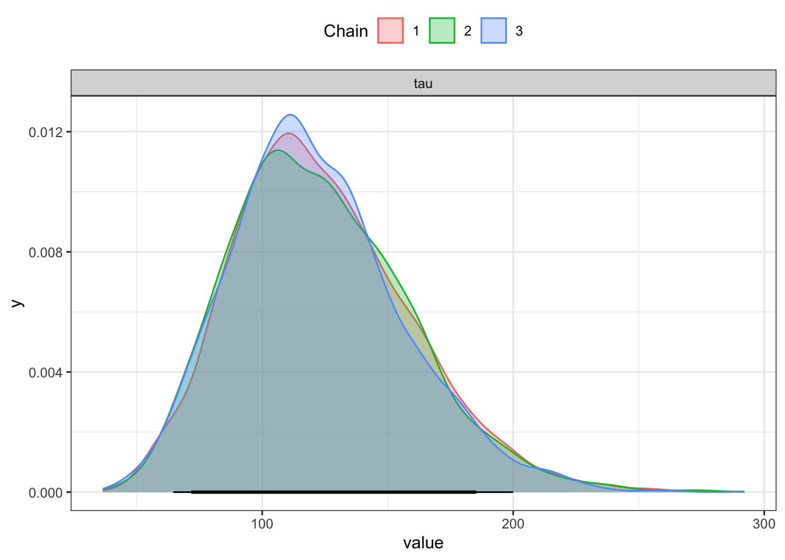
- Caterpillar plots
ggs_caterpillar(ll_dug_bm.gg,family='beta0')+theme_bw()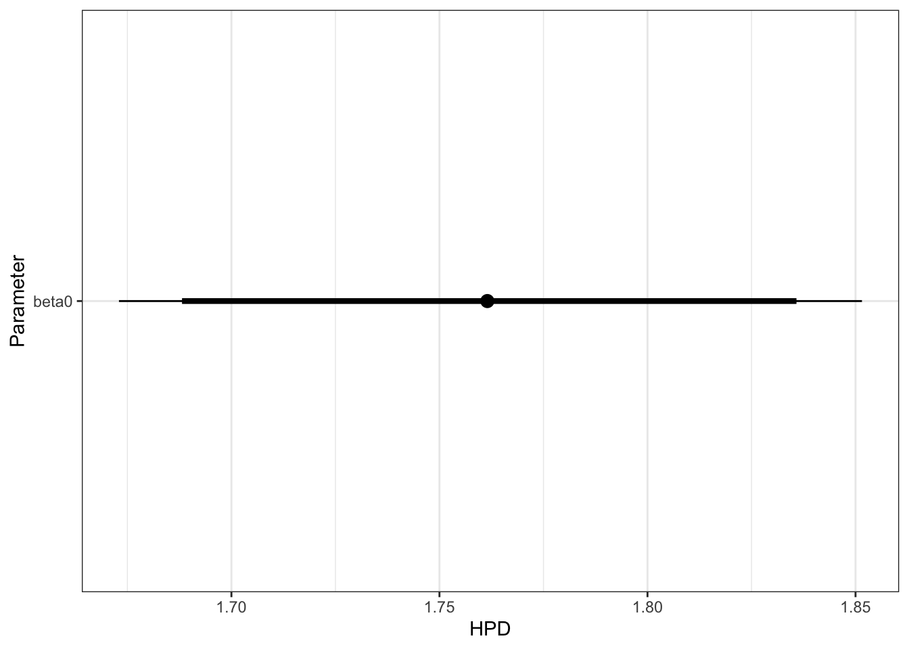
ggs_caterpillar(ll_dug_bm.gg,family='beta1')+theme_bw()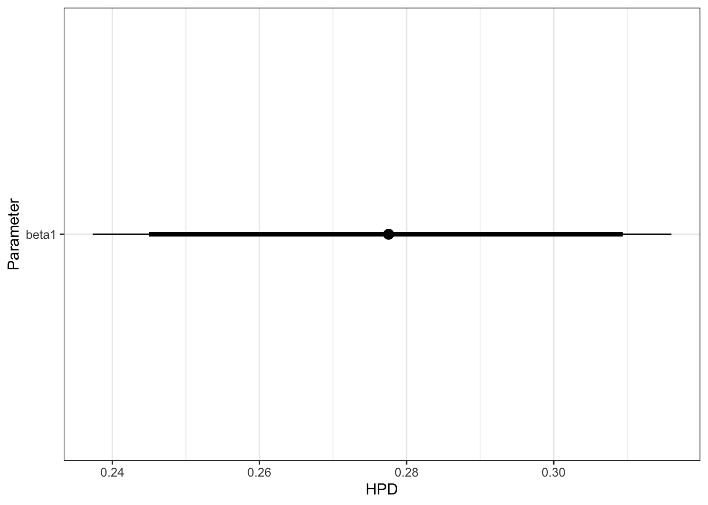
ggs_caterpillar(ll_dug_bm.gg,family='tau')+theme_bw()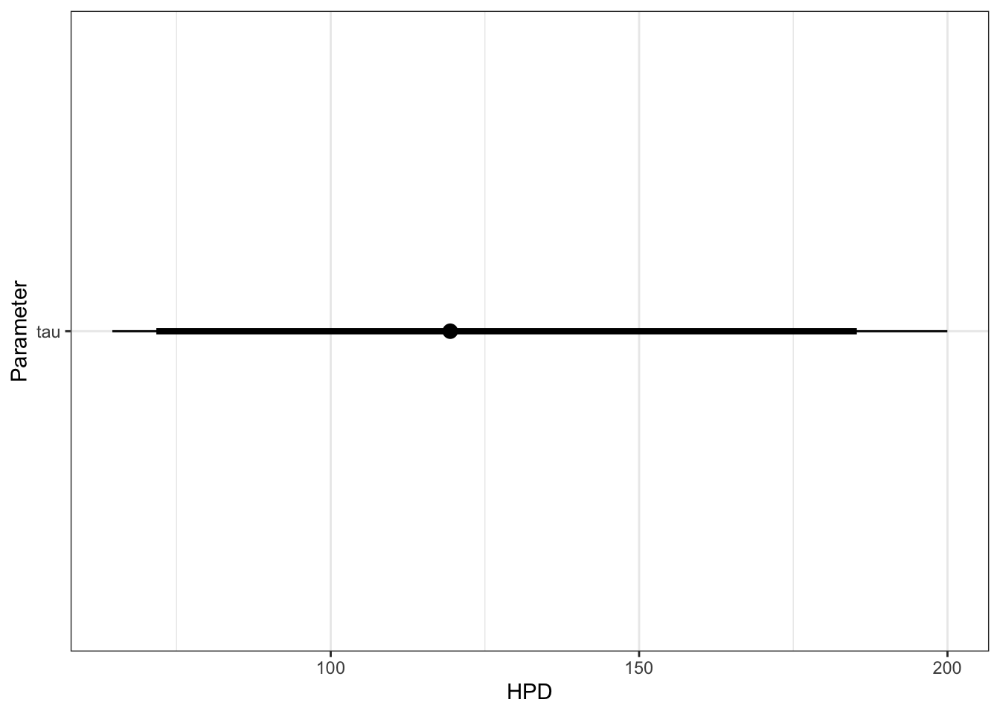
- Running means of the chains.
ggs_running(ll_dug_bm.gg,family='beta')+theme_bw()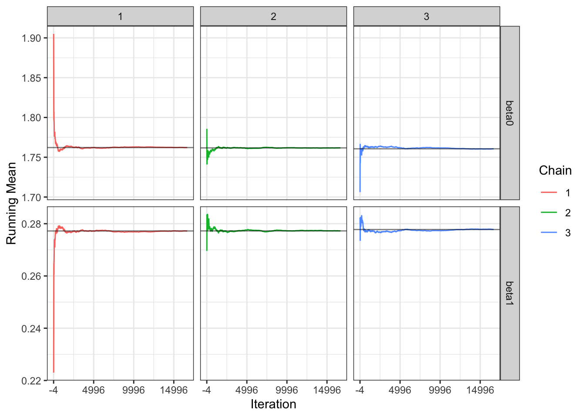
ggs_running(ll_dug_bm.gg,family='tau')+theme_bw()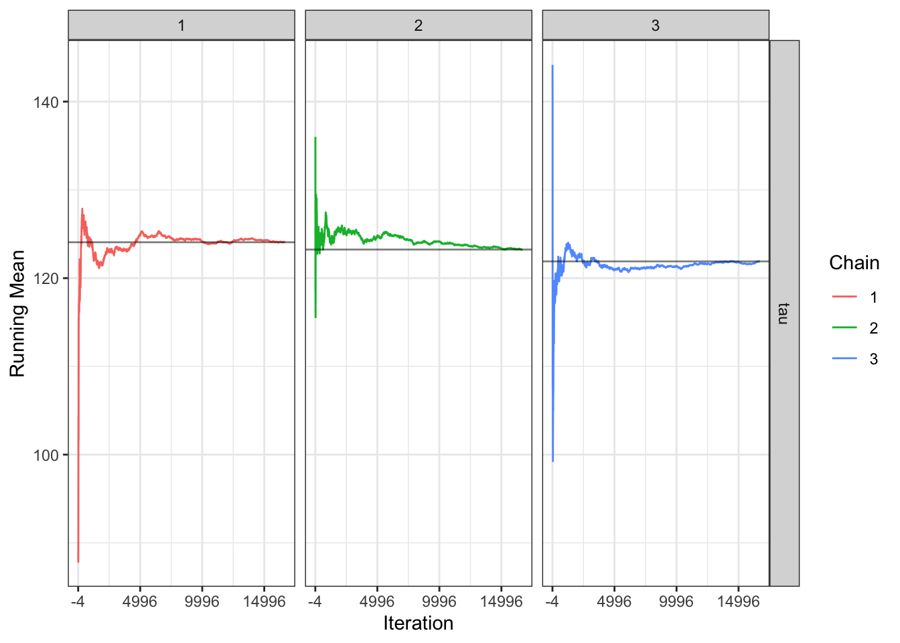
- Density plots comparing the distribution of the whole chain with only its last part.
ggs_compare_partial(ll_dug_bm.gg,family='beta')+theme_bw()+theme(legend.position = 'top')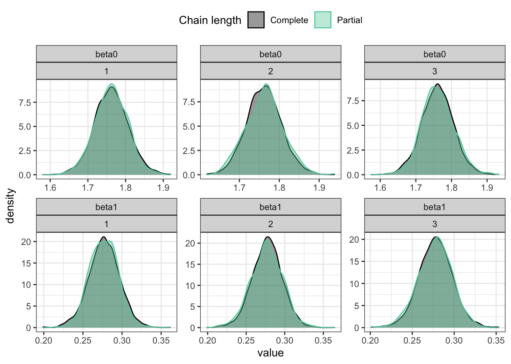
ggs_compare_partial(ll_dug_bm.gg,family='tau')+theme_bw()+theme(legend.position = 'top')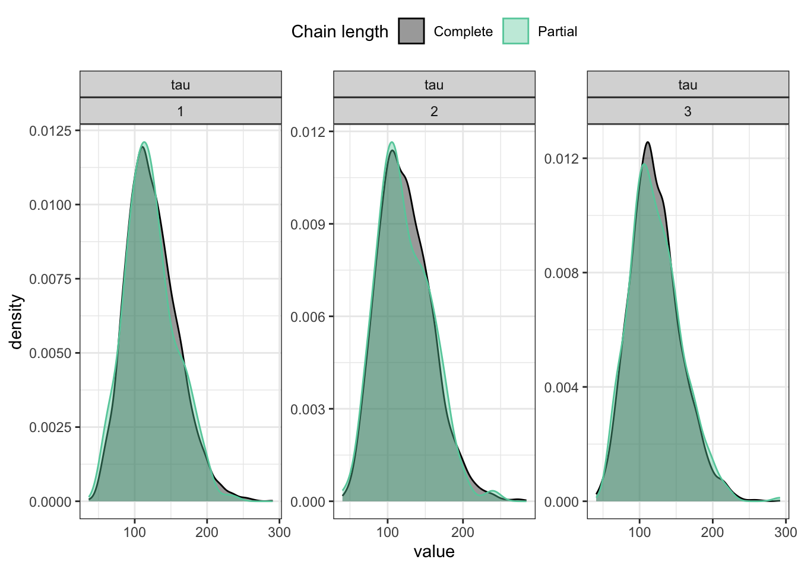
- Plot an autocorrelation matrix.
ggs_autocorrelation(ll_dug_bm.gg,family='beta')+theme_bw()+theme(legend.position = 'top')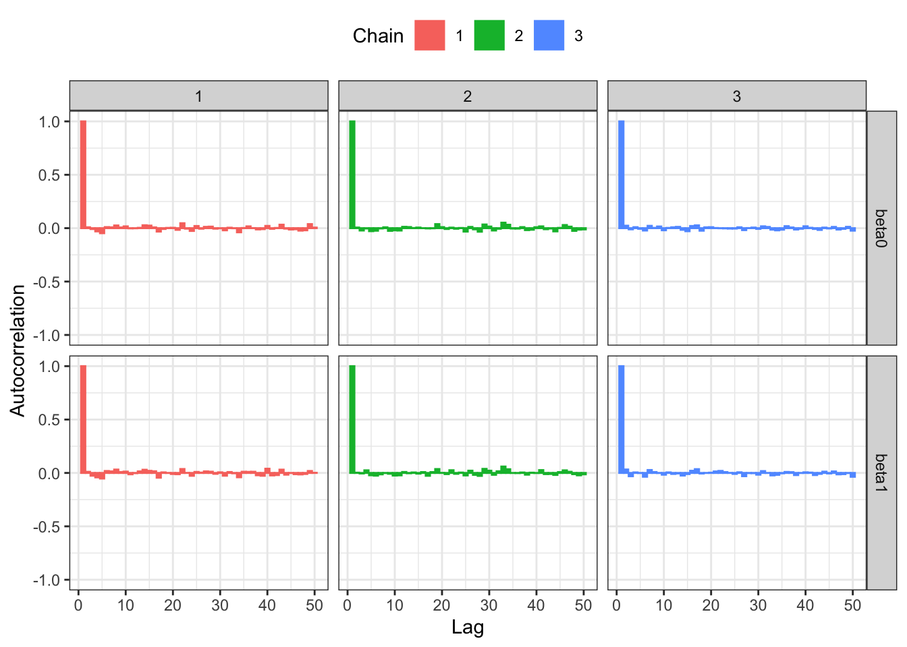
ggs_autocorrelation(ll_dug_bm.gg,family='tau')+theme_bw()+theme(legend.position = 'top')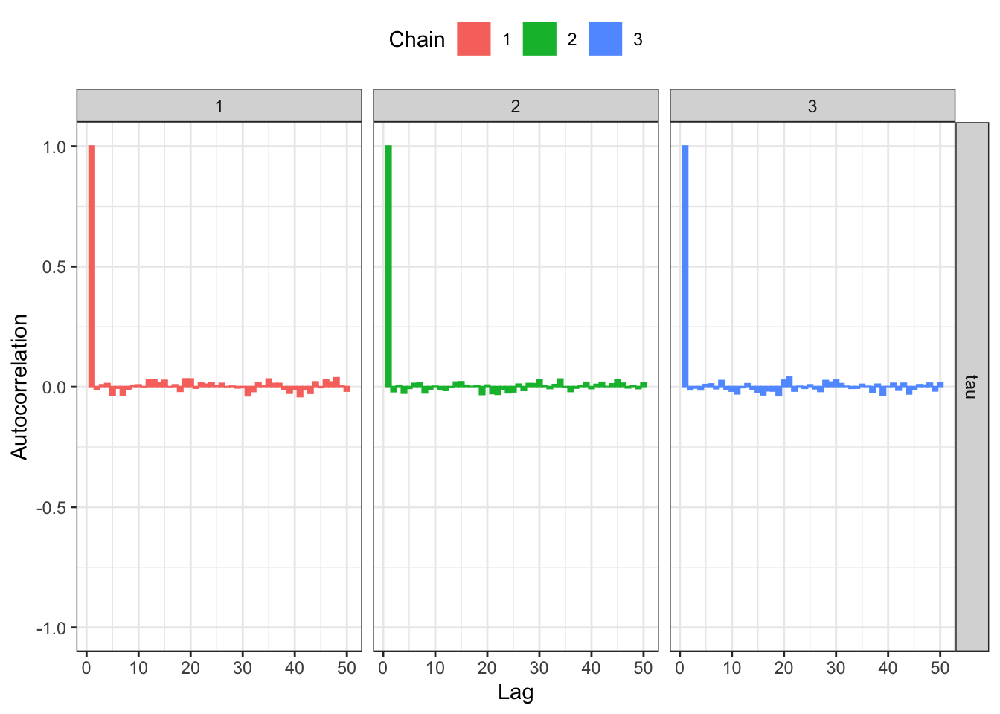
- Plot the Cross-correlation between-chains.
ggs_crosscorrelation(ll_dug_bm.gg%>%filter(Parameter!='deviance'))+theme_bw()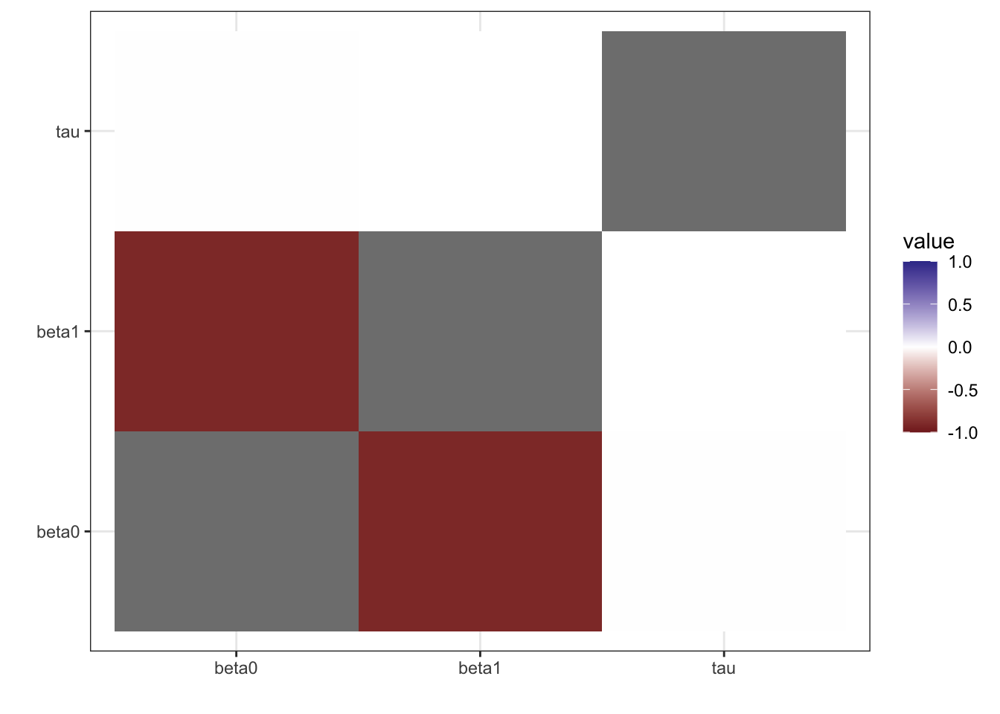
Let’s now use the Leave-One-Out (LOO) method to evaluate the predictive performance of the Bayesian linear model and compare it with the frequentist approach. To perform LOO cross-validation, we will create an R function that fits the Bayesian linear model to all the data except for one observation, and then uses the fitted model to predict the left-out observation. This process is repeated for each observation, and the predictions are compared to the observed values to estimate the model’s performance.
By using the LOO method, we can estimate the model’s out-of-sample predictive accuracy, which allows us to assess its ability to generalize to new data. We will compare the LOO performance of the Bayesian linear model with the performance of the frequentist linear model estimated earlier, to determine which approach provides better predictive accuracy. The comparison will be based on evaluation metrics such as root mean square error (RMSE) or mean absolute error (MAE), which are commonly used to assess the performance of regression models.
dug_log_lin = "
model {
#Likelihood
for (i in 1:N) {
Y[i]~dnorm(mu[i],tau)
mu[i] <- beta0+beta1*lx[i]
}
#Priors
beta0 ~ dnorm(0,1E-06)
beta1 ~ dnorm(0,1E-06)
tau ~ dgamma(1E-03,1E-03)
sigma2 <- 1/tau
}
"
pred_Y<-function(j){
dataList3=dataList2
dataList3$Y[j]=NA
parameters.to.save<-'Y'
ll_dug_bm_LOOCV <- jags(data = dataList3, inits = inits,quiet = T,
parameters.to.save = parameters.to.save,
n.chains = nChains, n.iter = nIter,
n.burnin = burnInSteps,n.thin = thinSteps,
model.file =textConnection(dug_log_lin))
Ypred=ll_dug_bm_LOOCV$BUGSoutput$sims.matrix[,j]
Ypred
}Let’s now run the Bayesian and frequentist linear models using the LOO method and compute prediction metrics such as root mean square error (RMSE). We will compare these metrics to those computed with the frequentist approach to assess the predictive accuracy of each model. The RMSE is commonly used evaluation metrics in regression models that measure the distance between the predicted values and the observed values. By comparing these metrics, we can determine which model provides better predictive accuracy for the Dugong growth data.
N=dataList$N
zz=vector('list',N)
for(j in 1:N){
zz[[j]]=pred_Y(j)
}Computing Bayesian RMSE
rmse_bys<-c()
for(j in 1:N){
x=mean(zz[[j]])
rmse_bys=c(rmse_bys,(x-dataList$Y[j])^2)
}
sqrt(mean(rmse_bys))
## [1] 0.0924652Let’s compare it with
z$results[2]
## RMSE
## 1 0.09257742Non linear model
We will now estimate the nonlinear model
Yi = α − β ⋅ γxi + ϵi, i = 1, …, n
using a Bayesian approach, where α, β are real numbers, and γ ∈ (.5,1). First, we will write the JAGS code for the model and define the initial values for the Markov chain and iterations settings.
dug_non_line<-"model{
for( i in 1 : N ) {
Y[i] ~ dnorm(mu[i], tau)
mu[i] <- alpha - beta * pow(gamma,x[i])
}
alpha ~ dnorm(0.0, 1.0E-6)
beta ~ dnorm(0.0, 1.0E-6)
gamma ~ dunif(0.5, 1)
tau ~ dgamma(1.0E-3, 1.0E-3)
sigma <- 1.0/sqrt(tau)
}"Initial values of the Markov Chain:
inits1=list(alpha=1,beta=1,tau=1,gamma=0.9)
inits2=list(alpha=-0.5,beta=0.3,tau=3,gamma=0.6)
inits3=list(alpha=0.1,beta=0.4,tau=0.3,gamma=0.6)
inits=list(inits1,inits2,inits3)Parameters:
parameters.to.save<-c("alpha","beta","gamma","tau","sigma")Chain iterations:
nChains=3
burnInSteps=3000
thinSteps= 5
numSavedSteps= 10000
nIter = ceiling(burnInSteps + (numSavedSteps * thinSteps)/nChains)Run the MCMC:
non_lin_dug_bm <- jags(data = dataList, inits = inits,
parameters.to.save = parameters.to.save,
n.chains = nChains, n.iter = nIter,
n.burnin = burnInSteps,n.thin = thinSteps,
model.file =textConnection(dug_non_line))
## Compiling model graph
## Resolving undeclared variables
## Allocating nodes
## Graph information:
## Observed stochastic nodes: 27
## Unobserved stochastic nodes: 4
## Total graph size: 126
##
## Initializing model
print(non_lin_dug_bm)
## Inference for Bugs model at "6", fit using jags,
## 3 chains, each with 19667 iterations (first 3000 discarded), n.thin = 5
## n.sims = 9999 iterations saved
## mu.vect sd.vect 2.5% 25% 50% 75% 97.5% Rhat n.eff
## alpha 2.651 0.071 2.528 2.603 2.645 2.693 2.807 1.002 2200
## beta 0.972 0.077 0.826 0.922 0.969 1.020 1.130 1.001 10000
## gamma 0.862 0.033 0.785 0.844 0.866 0.884 0.915 1.006 1000
## sigma 0.099 0.015 0.075 0.088 0.097 0.107 0.134 1.001 3400
## tau 108.670 31.310 55.901 86.657 105.302 127.687 179.413 1.001 3400
## deviance -49.066 3.206 -52.970 -51.384 -49.833 -47.522 -40.728 1.005 760
##
## For each parameter, n.eff is a crude measure of effective sample size,
## and Rhat is the potential scale reduction factor (at convergence, Rhat=1).
##
## DIC info (using the rule, pD = var(deviance)/2)
## pD = 5.1 and DIC = -43.9
## DIC is an estimate of expected predictive error (lower deviance is better).Let’s proceed to the convergence diagnostics of the MCMC algorithm.
non_lin_dug_bm.mcmc=as.mcmc(non_lin_dug_bm)
non_lin_dug_bm.gg<-ggs(non_lin_dug_bm.mcmc)
rhat1<-ggs_Rhat(non_lin_dug_bm.gg,family='beta')
rhat1$data
## # A tibble: 1 × 5
## Parameter B W wa Rhat
## <fct> <dbl> <dbl> <dbl> <dbl>
## 1 beta 0.00591 0.00600 0.00600 1.00
rhat1<-ggs_Rhat(non_lin_dug_bm.gg,family='alpha')
rhat1$data
## # A tibble: 1 × 5
## Parameter B W wa Rhat
## <fct> <dbl> <dbl> <dbl> <dbl>
## 1 alpha 0.0213 0.00507 0.00508 1.00
rhat1<-ggs_Rhat(non_lin_dug_bm.gg,family='gamma')
rhat1$data
## # A tibble: 1 × 5
## Parameter B W wa Rhat
## <fct> <dbl> <dbl> <dbl> <dbl>
## 1 gamma 0.0108 0.00112 0.00112 1.00
rhat1<-ggs_Rhat(non_lin_dug_bm.gg,family='tau')
rhat1$data
## # A tibble: 1 × 5
## Parameter B W wa Rhat
## <fct> <dbl> <dbl> <dbl> <dbl>
## 1 tau 2429. 980. 980. 1.00
gelman.diag(non_lin_dug_bm.mcmc)
## Potential scale reduction factors:
##
## Point est. Upper C.I.
## alpha 1.00 1.01
## beta 1.00 1.01
## deviance 1.01 1.03
## gamma 1.02 1.03
## sigma 1.00 1.00
## tau 1.00 1.00
##
## Multivariate psrf
##
## 1.01
gelman.plot(non_lin_dug_bm.mcmc)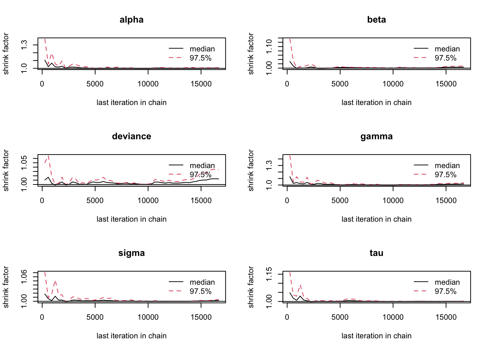
ggs_density(non_lin_dug_bm.gg,family='alpha',hpd = T)+theme_bw()+theme(legend.position = 'top')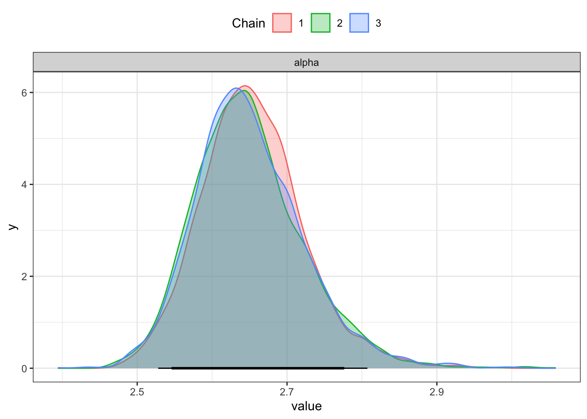
ggs_density(non_lin_dug_bm.gg,family='beta',hpd = T)+theme_bw()+theme(legend.position = 'top')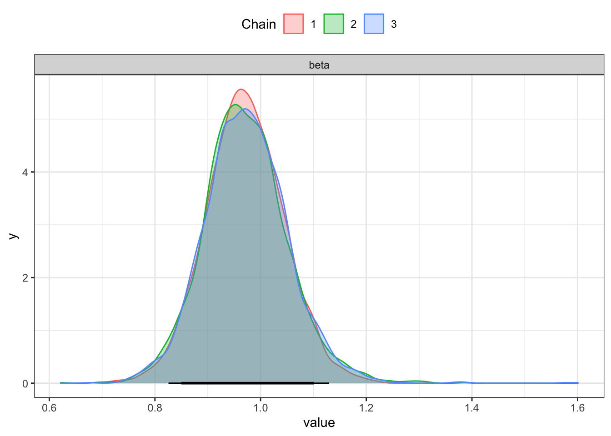
ggs_density(non_lin_dug_bm.gg,family='gamma',hpd = T)+theme_bw()+theme(legend.position = 'top')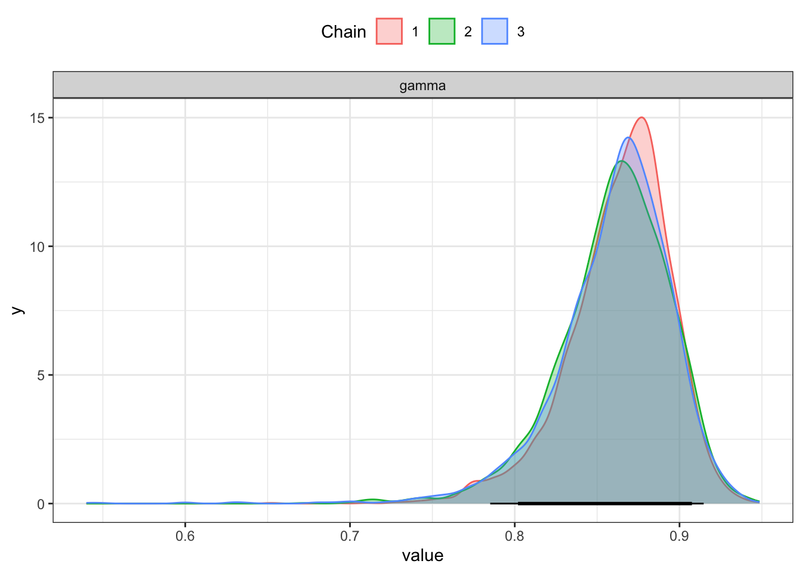
ggs_density(non_lin_dug_bm.gg,family='tau',hpd = T)+theme_bw()+theme(legend.position = 'top')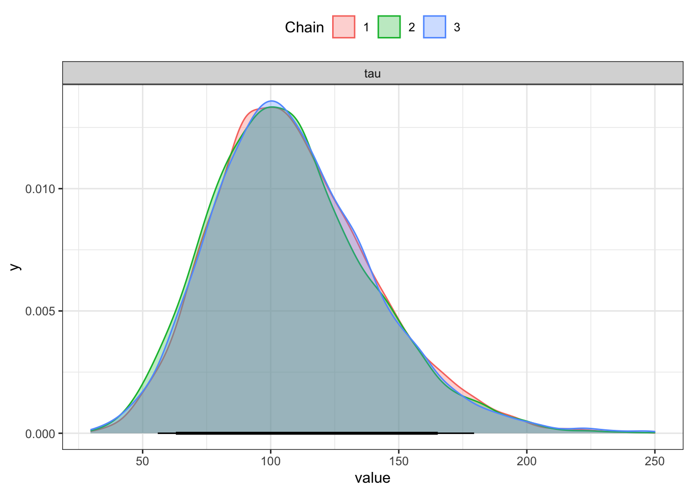
ggs_autocorrelation(non_lin_dug_bm.gg,family='alpha')+theme_bw()+theme(legend.position = 'top')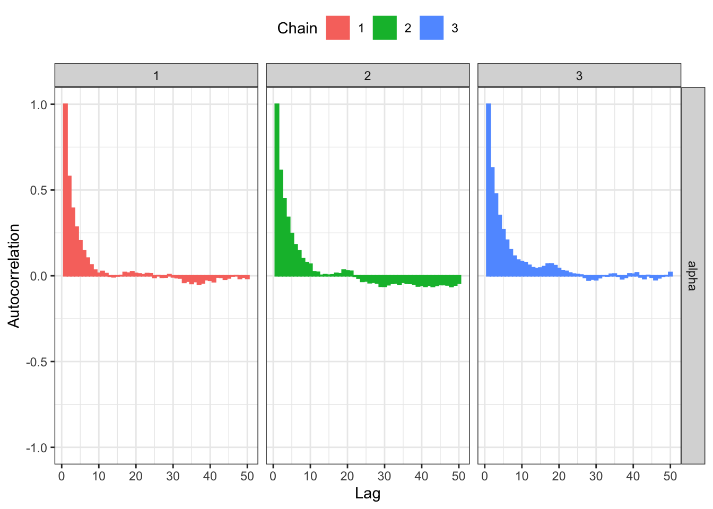
ggs_autocorrelation(non_lin_dug_bm.gg,family='beta')+theme_bw()+theme(legend.position = 'top')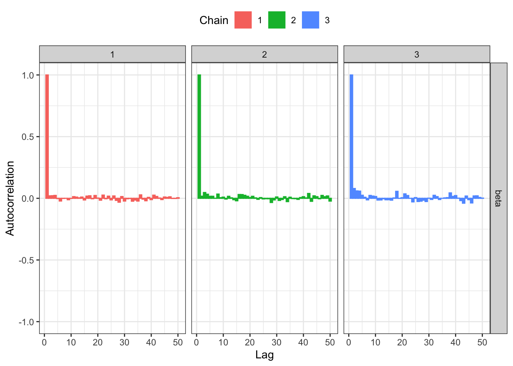
ggs_autocorrelation(non_lin_dug_bm.gg,family='gamma')+theme_bw()+theme(legend.position = 'top')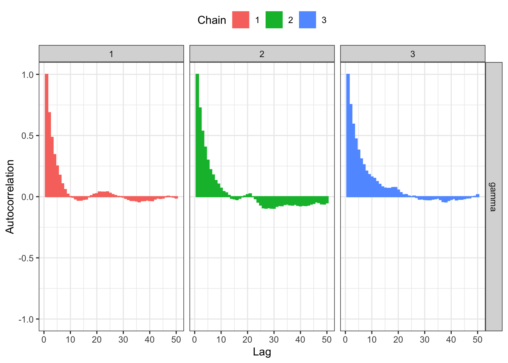
ggs_autocorrelation(non_lin_dug_bm.gg,family='tau')+theme_bw()+theme(legend.position = 'top')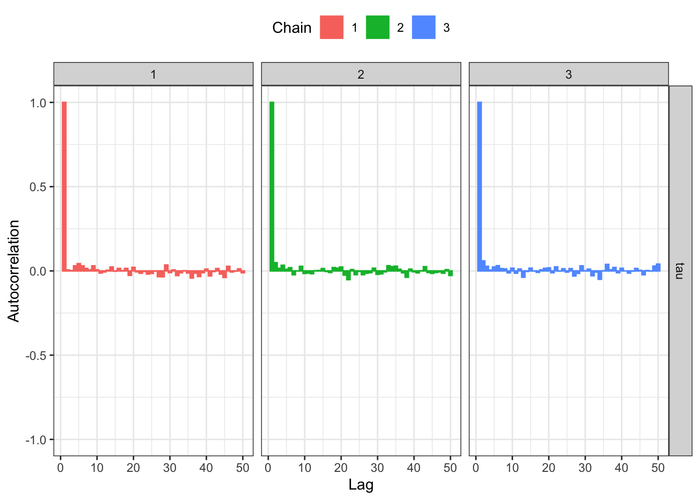
We will now use the previous model to predict the Dugong weight in terms of age. We will consider a sequence of values for the Age variable, denoted by x, ranging from 0 to 32 with a step size of 0.5. We will then use the nonlinear Bayesian model to estimate the corresponding fitted values for each value of x. These fitted values will provide a curve representing the predicted weight of the Dugongs as they age.”
xx=seq(0.5,32,by=.5)
yy=rep(NA,length(xx))
dataList=list(x = c( 1.0, 1.5, 1.5, 1.5, 2.5, 4.0, 5.0, 5.0, 7.0,
8.0, 8.5, 9.0, 9.5, 9.5, 10.0, 12.0, 12.0, 13.0,
13.0, 14.5, 15.5, 15.5, 16.5, 17.0, 22.5, 29.0, 31.5),
Y = c(1.80, 1.85, 1.87, 1.77, 2.02, 2.27, 2.15, 2.26, 2.47,
2.19, 2.26, 2.40, 2.39, 2.41, 2.50, 2.32, 2.32, 2.43,
2.47, 2.56, 2.65, 2.47, 2.64, 2.56, 2.70, 2.72, 2.57), N = 27)
x=c(dataList$x,xx)
Y=c(dataList$Y,yy)
N=length(Y)
dataList=list(x=x,Y=Y,N=N)
dataList
## $x
## [1] 1.0 1.5 1.5 1.5 2.5 4.0 5.0 5.0 7.0 8.0 8.5 9.0 9.5 9.5 10.0
## [16] 12.0 12.0 13.0 13.0 14.5 15.5 15.5 16.5 17.0 22.5 29.0 31.5 0.5 1.0 1.5
## [31] 2.0 2.5 3.0 3.5 4.0 4.5 5.0 5.5 6.0 6.5 7.0 7.5 8.0 8.5 9.0
## [46] 9.5 10.0 10.5 11.0 11.5 12.0 12.5 13.0 13.5 14.0 14.5 15.0 15.5 16.0 16.5
## [61] 17.0 17.5 18.0 18.5 19.0 19.5 20.0 20.5 21.0 21.5 22.0 22.5 23.0 23.5 24.0
## [76] 24.5 25.0 25.5 26.0 26.5 27.0 27.5 28.0 28.5 29.0 29.5 30.0 30.5 31.0 31.5
## [91] 32.0
##
## $Y
## [1] 1.80 1.85 1.87 1.77 2.02 2.27 2.15 2.26 2.47 2.19 2.26 2.40 2.39 2.41 2.50
## [16] 2.32 2.32 2.43 2.47 2.56 2.65 2.47 2.64 2.56 2.70 2.72 2.57 NA NA NA
## [31] NA NA NA NA NA NA NA NA NA NA NA NA NA NA NA
## [46] NA NA NA NA NA NA NA NA NA NA NA NA NA NA NA
## [61] NA NA NA NA NA NA NA NA NA NA NA NA NA NA NA
## [76] NA NA NA NA NA NA NA NA NA NA NA NA NA NA NA
## [91] NA
##
## $N
## [1] 91
parameters.to.save="Y"non_lin_dug_bm2 <- jags(data = dataList, inits = inits,
parameters.to.save = parameters.to.save,
n.chains = nChains, n.iter = nIter,
n.burnin = burnInSteps,n.thin = thinSteps,
model.file =textConnection(dug_non_line))
## Compiling model graph
## Resolving undeclared variables
## Allocating nodes
## Graph information:
## Observed stochastic nodes: 27
## Unobserved stochastic nodes: 68
## Total graph size: 386
##
## Initializing model
print(non_lin_dug_bm2)
## Inference for Bugs model at "5", fit using jags,
## 3 chains, each with 19667 iterations (first 3000 discarded), n.thin = 5
## n.sims = 9999 iterations saved
## mu.vect sd.vect 2.5% 25% 50% 75% 97.5% Rhat n.eff
## Y[1] 1.800 0.000 1.800 1.800 1.800 1.800 1.800 1.000 1
## Y[2] 1.850 0.000 1.850 1.850 1.850 1.850 1.850 1.000 1
## Y[3] 1.870 0.000 1.870 1.870 1.870 1.870 1.870 1.000 1
## Y[4] 1.770 0.000 1.770 1.770 1.770 1.770 1.770 1.000 1
## Y[5] 2.020 0.000 2.020 2.020 2.020 2.020 2.020 1.000 1
## Y[6] 2.270 0.000 2.270 2.270 2.270 2.270 2.270 1.000 1
## Y[7] 2.150 0.000 2.150 2.150 2.150 2.150 2.150 1.000 1
## Y[8] 2.260 0.000 2.260 2.260 2.260 2.260 2.260 1.000 1
## Y[9] 2.470 0.000 2.470 2.470 2.470 2.470 2.470 1.000 1
## Y[10] 2.190 0.000 2.190 2.190 2.190 2.190 2.190 1.000 1
## Y[11] 2.260 0.000 2.260 2.260 2.260 2.260 2.260 1.000 1
## Y[12] 2.400 0.000 2.400 2.400 2.400 2.400 2.400 1.000 1
## Y[13] 2.390 0.000 2.390 2.390 2.390 2.390 2.390 1.000 1
## Y[14] 2.410 0.000 2.410 2.410 2.410 2.410 2.410 1.000 1
## Y[15] 2.500 0.000 2.500 2.500 2.500 2.500 2.500 1.000 1
## Y[16] 2.320 0.000 2.320 2.320 2.320 2.320 2.320 1.000 1
## Y[17] 2.320 0.000 2.320 2.320 2.320 2.320 2.320 1.000 1
## Y[18] 2.430 0.000 2.430 2.430 2.430 2.430 2.430 1.000 1
## Y[19] 2.470 0.000 2.470 2.470 2.470 2.470 2.470 1.000 1
## Y[20] 2.560 0.000 2.560 2.560 2.560 2.560 2.560 1.000 1
## Y[21] 2.650 0.000 2.650 2.650 2.650 2.650 2.650 1.000 1
## Y[22] 2.470 0.000 2.470 2.470 2.470 2.470 2.470 1.000 1
## Y[23] 2.640 0.000 2.640 2.640 2.640 2.640 2.640 1.000 1
## Y[24] 2.560 0.000 2.560 2.560 2.560 2.560 2.560 1.000 1
## Y[25] 2.700 0.000 2.700 2.700 2.700 2.700 2.700 1.000 1
## Y[26] 2.720 0.000 2.720 2.720 2.720 2.720 2.720 1.000 1
## Y[27] 2.570 0.000 2.570 2.570 2.570 2.570 2.570 1.000 1
## Y[28] 1.746 0.122 1.504 1.667 1.747 1.827 1.984 1.001 4600
## Y[29] 1.811 0.114 1.582 1.737 1.811 1.887 2.036 1.001 7100
## Y[30] 1.872 0.110 1.654 1.799 1.871 1.945 2.089 1.001 6100
## Y[31] 1.926 0.107 1.715 1.855 1.927 1.996 2.136 1.001 10000
## Y[32] 1.978 0.106 1.766 1.909 1.979 2.047 2.188 1.001 6500
## Y[33] 2.027 0.105 1.821 1.959 2.026 2.095 2.235 1.002 2000
## Y[34] 2.071 0.105 1.866 2.003 2.070 2.140 2.280 1.001 4500
## Y[35] 2.110 0.105 1.902 2.042 2.110 2.177 2.321 1.001 10000
## Y[36] 2.147 0.105 1.941 2.079 2.145 2.215 2.357 1.001 10000
## Y[37] 2.183 0.104 1.979 2.115 2.183 2.251 2.392 1.001 7900
## Y[38] 2.216 0.107 2.009 2.146 2.214 2.285 2.431 1.001 5700
## Y[39] 2.243 0.105 2.040 2.173 2.242 2.312 2.457 1.002 1900
## Y[40] 2.272 0.107 2.067 2.202 2.272 2.341 2.487 1.001 6300
## Y[41] 2.297 0.105 2.091 2.229 2.296 2.367 2.509 1.001 4400
## Y[42] 2.321 0.106 2.120 2.251 2.321 2.388 2.534 1.001 10000
## Y[43] 2.344 0.104 2.141 2.276 2.344 2.412 2.551 1.001 5800
## Y[44] 2.363 0.105 2.158 2.293 2.362 2.433 2.568 1.002 2500
## Y[45] 2.383 0.105 2.181 2.315 2.382 2.451 2.590 1.001 5500
## Y[46] 2.401 0.104 2.197 2.333 2.402 2.468 2.607 1.001 10000
## Y[47] 2.419 0.102 2.217 2.353 2.418 2.484 2.620 1.001 10000
## Y[48] 2.433 0.105 2.228 2.364 2.433 2.502 2.643 1.001 7600
## Y[49] 2.446 0.103 2.241 2.378 2.447 2.513 2.646 1.001 10000
## Y[50] 2.460 0.102 2.257 2.392 2.460 2.528 2.662 1.001 8800
## Y[51] 2.473 0.102 2.274 2.406 2.473 2.540 2.676 1.001 9600
## Y[52] 2.485 0.103 2.282 2.417 2.485 2.552 2.687 1.001 10000
## Y[53] 2.496 0.103 2.294 2.429 2.496 2.564 2.698 1.001 10000
## Y[54] 2.506 0.103 2.303 2.436 2.506 2.573 2.710 1.001 10000
## Y[55] 2.515 0.104 2.310 2.448 2.514 2.583 2.719 1.001 10000
## Y[56] 2.523 0.103 2.320 2.456 2.523 2.589 2.729 1.001 10000
## Y[57] 2.532 0.104 2.329 2.465 2.531 2.601 2.735 1.001 10000
## Y[58] 2.539 0.103 2.334 2.473 2.540 2.606 2.741 1.001 3500
## Y[59] 2.546 0.103 2.344 2.477 2.547 2.613 2.745 1.001 10000
## Y[60] 2.553 0.103 2.346 2.485 2.554 2.621 2.753 1.001 10000
## Y[61] 2.558 0.104 2.355 2.490 2.558 2.627 2.765 1.001 6900
## Y[62] 2.565 0.106 2.358 2.496 2.565 2.635 2.775 1.002 2900
## Y[63] 2.572 0.104 2.360 2.506 2.573 2.639 2.777 1.002 2900
## Y[64] 2.574 0.106 2.364 2.505 2.575 2.645 2.783 1.001 5500
## Y[65] 2.579 0.106 2.370 2.509 2.580 2.649 2.787 1.001 7500
## Y[66] 2.584 0.105 2.375 2.516 2.584 2.654 2.791 1.001 3800
## Y[67] 2.589 0.106 2.382 2.520 2.589 2.660 2.796 1.001 10000
## Y[68] 2.593 0.108 2.383 2.521 2.592 2.663 2.808 1.002 2700
## Y[69] 2.595 0.107 2.378 2.524 2.597 2.665 2.801 1.002 2600
## Y[70] 2.598 0.109 2.380 2.527 2.600 2.670 2.809 1.001 10000
## Y[71] 2.601 0.107 2.388 2.531 2.602 2.672 2.815 1.001 10000
## Y[72] 2.605 0.109 2.391 2.534 2.605 2.675 2.824 1.001 10000
## Y[73] 2.607 0.110 2.395 2.535 2.607 2.679 2.825 1.001 9200
## Y[74] 2.609 0.110 2.393 2.538 2.609 2.681 2.823 1.002 2500
## Y[75] 2.613 0.110 2.397 2.541 2.613 2.685 2.828 1.002 1400
## Y[76] 2.616 0.111 2.396 2.543 2.614 2.688 2.834 1.002 2100
## Y[77] 2.619 0.112 2.395 2.548 2.620 2.691 2.842 1.001 6500
## Y[78] 2.619 0.112 2.394 2.546 2.618 2.693 2.841 1.001 7800
## Y[79] 2.620 0.113 2.400 2.547 2.620 2.693 2.842 1.001 6300
## Y[80] 2.621 0.113 2.399 2.547 2.622 2.695 2.842 1.001 5200
## Y[81] 2.626 0.112 2.405 2.554 2.626 2.700 2.849 1.001 4200
## Y[82] 2.627 0.113 2.404 2.553 2.627 2.702 2.851 1.002 3100
## Y[83] 2.627 0.114 2.402 2.552 2.629 2.700 2.851 1.001 5600
## Y[84] 2.627 0.115 2.396 2.553 2.628 2.702 2.852 1.002 1500
## Y[85] 2.630 0.112 2.411 2.558 2.628 2.704 2.858 1.001 10000
## Y[86] 2.631 0.114 2.410 2.557 2.630 2.705 2.862 1.001 3500
## Y[87] 2.633 0.114 2.407 2.559 2.633 2.709 2.854 1.002 1900
## Y[88] 2.632 0.114 2.411 2.556 2.633 2.708 2.858 1.001 3600
## Y[89] 2.633 0.116 2.406 2.558 2.632 2.709 2.862 1.001 5400
## Y[90] 2.635 0.116 2.412 2.557 2.634 2.710 2.863 1.002 1800
## Y[91] 2.637 0.117 2.408 2.559 2.637 2.714 2.868 1.001 6200
## deviance -48.985 3.275 -52.990 -51.347 -49.752 -47.417 -40.457 1.001 10000
##
## For each parameter, n.eff is a crude measure of effective sample size,
## and Rhat is the potential scale reduction factor (at convergence, Rhat=1).
##
## DIC info (using the rule, pD = var(deviance)/2)
## pD = 5.4 and DIC = -43.6
## DIC is an estimate of expected predictive error (lower deviance is better).non_lin_dug_bm2=as.mcmc(non_lin_dug_bm2)
non_lin_dug_bm2=ggs(non_lin_dug_bm2)
Ys=sapply(28:91,function(i)glue::glue("Y[",i,"]"))
non_lin_dug_bm2=non_lin_dug_bm2%>%filter(Parameter%in%Ys)
dt_curv<-non_lin_dug_bm2%>%group_by(Parameter)%>%summarise(lwr=quantile(value,probs = .025),upr=quantile(value,probs = .975),ave=mean(value))
dt_curv$x=xx
dt_curv%>%head()
## # A tibble: 6 × 5
## Parameter lwr upr ave x
## <fct> <dbl> <dbl> <dbl> <dbl>
## 1 Y[28] 1.50 1.98 1.75 0.5
## 2 Y[29] 1.58 2.04 1.81 1
## 3 Y[30] 1.65 2.09 1.87 1.5
## 4 Y[31] 1.71 2.14 1.93 2
## 5 Y[32] 1.77 2.19 1.98 2.5
## 6 Y[33] 1.82 2.24 2.03 3The growth curve:
library(ggplot2)
ggplot(dt_curv,aes(x,ave))+geom_line()+geom_ribbon(aes(ymin=lwr,ymax=upr),fill='pink',alpha=.3)+
geom_point(data=dt,aes(x,y))+xlab('Age')+ylab('Weight')+theme_bw()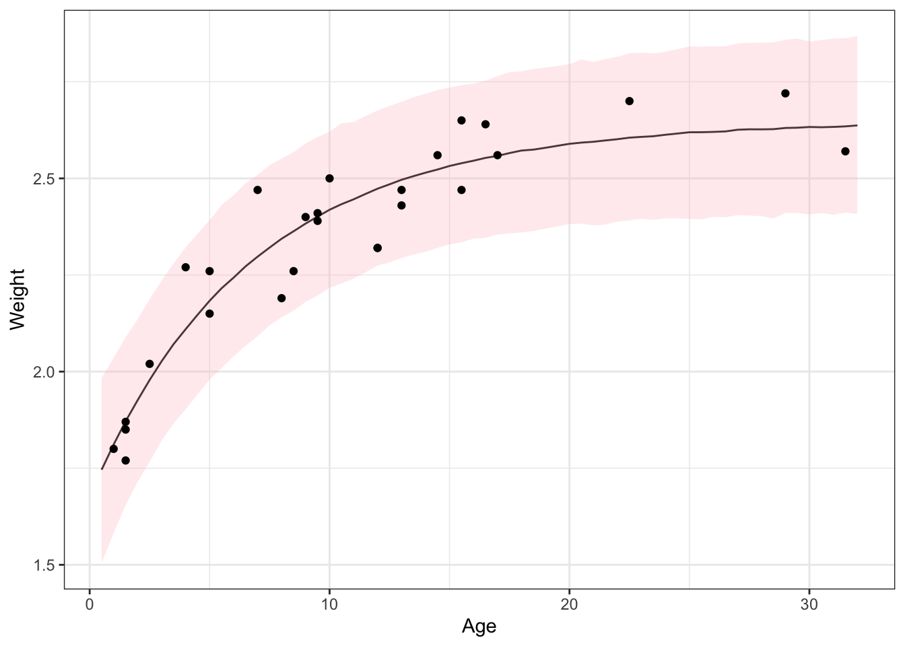